This document covers development practices, testing methodologies, and backtesting capabilities for the Signal trading system. It provides guidance for developers working on system enhancements and performance analysis.
For information about the core trading pipeline implementation, see Trading Components. For details about specific agent implementations, see Agent System Reference.
The Signal system uses a modern TypeScript-based development stack with Bun as the primary runtime and build tool. The development process emphasizes rapid iteration and comprehensive testing of trading strategies.

Development Build Pipeline
The system employs multiple testing approaches to ensure trading algorithm reliability:
| Testing Type | Purpose | Implementation |
|---|---|---|
| Backtesting | Historical performance validation | BACKTEST.md analysis reports |
| Unit Testing | Component-level verification | TypeScript test suites |
| Integration Testing | End-to-end workflow validation | AI agent response testing |
| Performance Testing | System load and response time | Real-time trading simulation |

Development Environment Components
The codebase follows strict TypeScript standards with emphasis on:
| Component | File Pattern | Purpose |
|---|---|---|
| AI Services | services/*Service.js |
Core mathematical and AI analysis |
| Agent System | agents/*Agent.js |
Specialized cryptocurrency consultants |
| Trading Engine | outline/*.js |
Signal generation and position management |
| Frontend Apps | apps/*/ |
React-based user interfaces |

Monitoring and Debugging Pipeline
The system provides comprehensive logging and monitoring capabilities through PM2 process management and centralized log aggregation. Real-time metrics are stored in Redis for dashboard visualization.
Related sections: Backtesting System provides detailed analysis capabilities, Development Roadmap outlines planned enhancements.